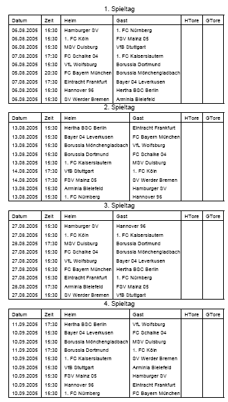

PDF Spielplan
Ermöglicht das Erstellen von Spielplänen im PDF-Format. Nach der Installation erscheint unterhalb des Links 'LigaSpielplan drucken' ein weiterer Link , der das PDF Dokument erstellt und im Browser anzeigt.
[nach oben]Systemvoraussetzung
- Ab LMO 4.0+
Dieses Addon benötigt zwingend die ClasslibAddons mit PDF Class für LMO 4 (c) von Tim Schumacher.
Für die PDF Generierung sind keine zusätzlichen PHP Bibliotheken erforderlich.
Download
Eine ausführliche Installationsanleitung ist der jeweiligen Version beigefügt.
[nach oben]